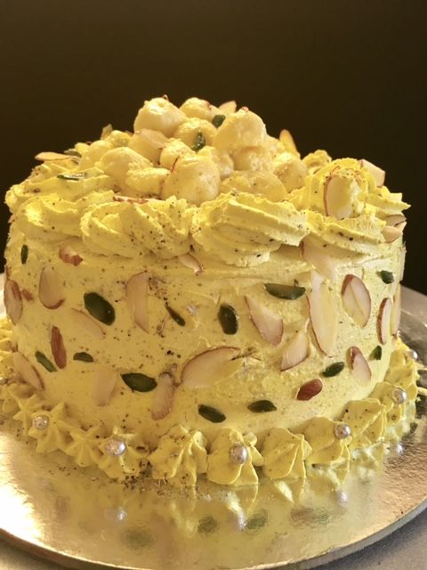

One of the things I love most about California is that the roads themselves can be just as exciting as the destinations. Of course, there are famous roads like Pacific Coast Highway in the state, but we also have a lot of great drives that are not as well known to travel on. Here is a list of my favorite California drives, along with the posts that I have written about places that can be found on that drive.
Margaret TaurleyAbout:
I cook extensively, and post about my cooking stories along with super appetising pictures. |
3Posts |
22Followers |
89Following |
Recent Posts

nancy

nancy
I tried to experiment with different curries in the paneer dish and finally made the makkhan paneer which is filling my mouth with water. After experimenting with tomato-tamarind gravy, tomato-cashew gravy, and tomato-beetroot gravy...I finally cooked this.
nancy
South Indian dishes are one of my favorite foods, but I love to eat dosa if I don't find anything. Whenever I have the food left in the refrigerator maximum time I have converted it to dosa stuff and tried rava dosa, poha dosa, and many more. This time I have made ghee dosa alongwith sambhar, and coconut chatni